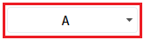
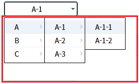
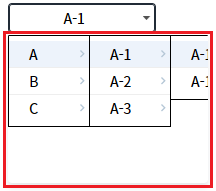
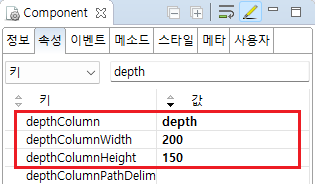

SelectBox의 항목에 계층 구조의 데이터를 표시한 예제입니다.
이 예제는 아래의 속성을 사용하여 구현되었습니다.
depthColumn : 목록을 계층 구조로 보여줄 때 사용하는 속성.
depthColumnHeight : depthColumn 기능 사용 시 목록의 높이 값.
depthColumnWidth : depthColumn 기능 사용 시 목록의 너비 값.
계층 구조로 표시하기
계층 구조의 너비 높이 지정하기
예제 영역 '계층 구조로 표시하기'에서 테스트합니다.1
STEP 1: SelectBox를 클릭합니다.
Image 1.브라우저(Chrome) 실행 예시

2
STEP 2: 항목을 클릭하고 실행 결과를 확인합니다.
항목이 계층 구조로 표시되면 'A' 항목을 클릭하면 'A-1', 'A-2', 'A-3' 항목이 표시됩니다. 'A-1' 항목을 클릭하면 'A-1-1', 'A-1-2' 항목이 표시됩니다. 이때, 항목이 표시되는 영역의 너비와 높이가 항목의 사이즈에 맞춰 구성됩니다.
Image 2.브라우저(Chrome) 실행 예시

예제 영역 '계층 구조 영역의 너비와 높이 지정하기'에서 테스트합니다.1
STEP 1: SelectBox를 클릭합니다.
Image 3.브라우저(Chrome) 실행 예시
2
STEP 2: 항목을 클릭하여 실행 결과를 확인합니다.
항목이 계층 구조로 표시되면 'A' 항목을 클릭하면 'A-1', 'A-2', 'A-3' 항목이 표시됩니다. 'A-1' 항목을 클릭하면 'A-1-1', 'A-1-2' 항목이 표시됩니다. 이때, 항목이 표시되는 영역의 높이가 '150px'로, 너비가 '200px'로 구성됩니다. 설정한 너비가 항목에 고려되지 않아 모두 표시되지 않습니다.
Image 4.브라우저(Chrome) 실행 예시

1
SelectBox의 속성을 정의합니다.
[필수] depthColumn
목록을 계층 구조로 보여줄 때 사용하는 속성.
treeview, gridView drilldown의 deapth와 동일한 개념이다. depth값이 동일한 항목끼리 묶어서 계층 구조로 목록을 보여준다.
depth값이 1인 항목들이 제일 처음 나타나며, 해당 항목을 선택하면 그 다음 depth가 2인 항목들이 나타나고 그 다음 항목을 선택하면 depth가 3인 항목이 나타나는 구조이다.
[선택] depthColumnHeight
depthColumn 기능 사용 시 목록의 높이값(px). 이 값을 지정하지 않으면 목록의 높이가 세로 스크롤이 생기지 않는 최소 높이로 자동 계산된다.
[선택] depthColumnWidth
depthColumn 기능 사용 시 목록의 넓이값(px). 이 값을 지정하지 않으면 목록의 넓이가 가로 스크롤이 생기지 않는 최소 길이로 자동 계산된다.
Image 5.웹스퀘어 스튜디오의 Component View - 속성 설정 예시

Example 1.Source
<!-- selectBox 의 소스 본문 예시 --> <xf:select1 id="sbx_exam2" depthColumn="depth" depthColumnWidth="200" depthColumnHeight="150"> <!-- 중략 --> </xf:select1>
depthColumn
depthColumnHeight
depthColumnWidth